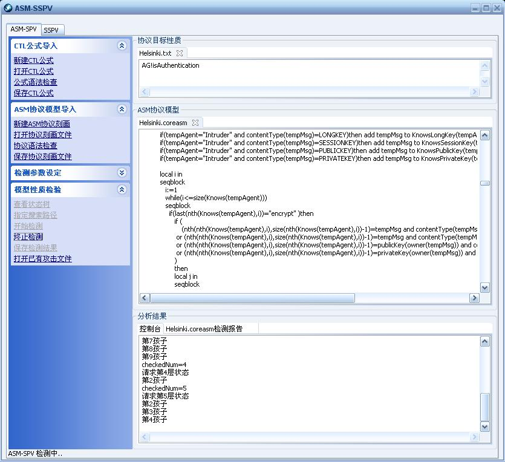
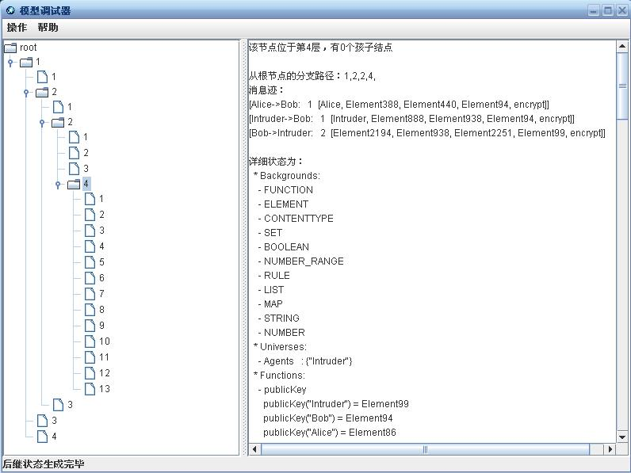
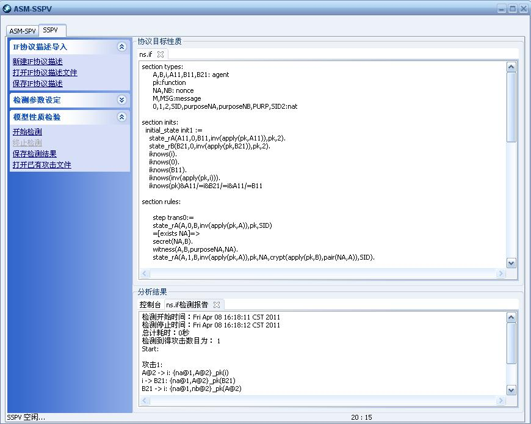

Preface: The ASM-SPV is a model checking tool for security protocols, which supports CoreASM as the input language. And it supports CTL for describing the target security properties.
Current version: (2010-01-01) The ASM-SPV v1.0 is now released (Chinese version).
Features of ASM-SPV v1.0: (According to our recent tests)
Fast and stable: Model checking about 3000 states per minute and can model checking up to 10^6 states stably.
Memory efficient: Less than 50M memory consumption for checking 340,000 states.
Automatically delete un-useful states: Identical states and states that do not cause events in a protocol will be deleted automatically.
User-friendly interface.

Main window of ASM-SPV

Model debug window
Preface: The SSPV is a symbolic model checking tool for security protocols, which supports IF as the input language (the same as that of OFMC).
Current version: (2011-02-01) The SSPV v1.0 is now released (Chinese version).
Features of SSPV v1.0: (According to our recent tests)
Fast and stable, Memory efficient, User-friendly interface.

Main window of SSPV